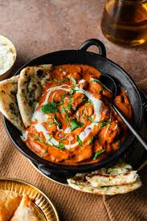
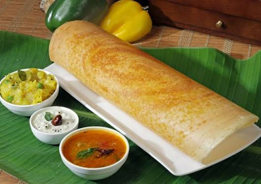
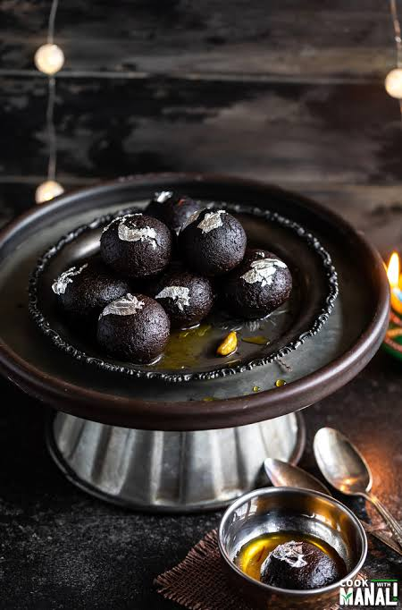

Famous Indian Foods
Home |
Destinations |
Foods |
Places |
Gallery |
Contact
Indian cuisine is famous all over the world for its spices and variety. Every region
has its own special dishes, from creamy curries in the north to crispy dosas in the
south, and from spicy street snacks to sweet desserts.
5 Famous Dishes
- Butter Chicken
- Masala Dosa
- Biryani
- Chole Bhature
- Gulab Jamun
Food Categories
- North Indian
- South Indian
- Street Food
- Desserts
About Some Dishes
- Butter Chicken
- Chicken cooked in a rich, creamy tomato and butter gravy.
- Masala Dosa
- A thin crispy crepe filled with spiced potato, served with sambar and chutney.
- Gulab Jamun
- Soft fried milk balls soaked in sweet sugar syrup.



Back to Top